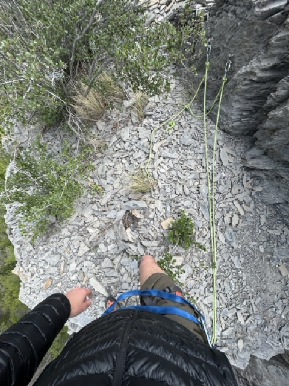
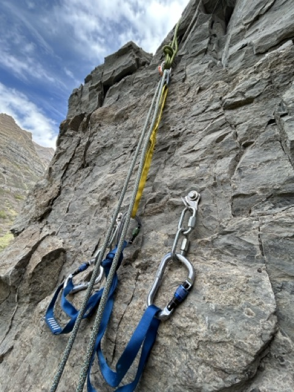
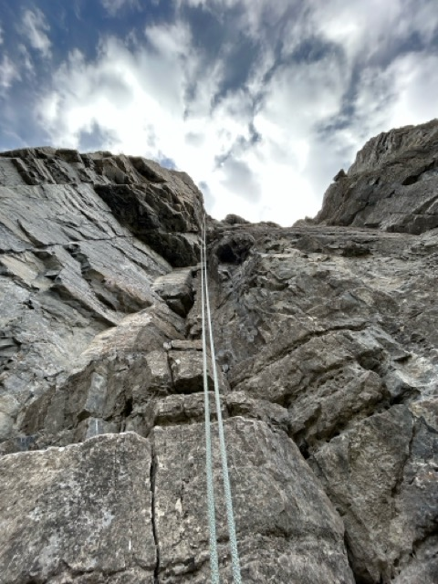
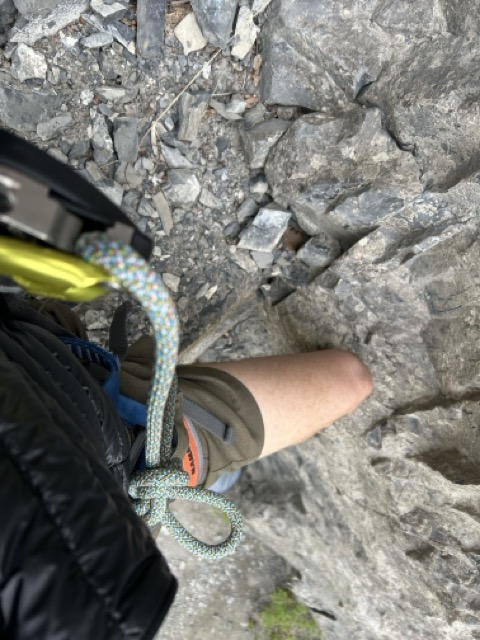
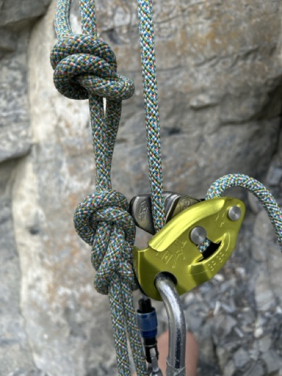
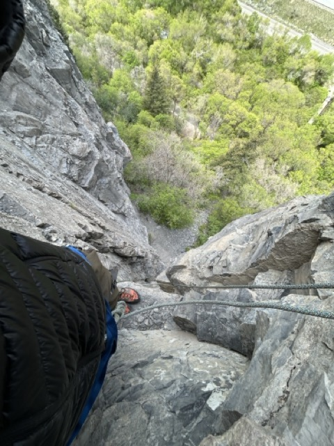
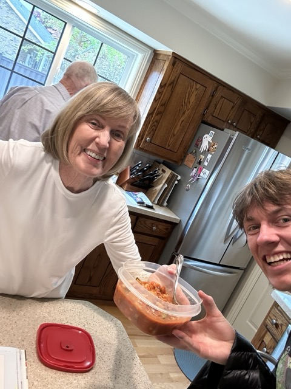

I am in beautiful Provo UT today! Only had my 30L osprey for the weekend, which instead of clothes, contained some climbing gear! I've been getting all jazzed about climbing the 22 pitch Kyhv Peak and thought I could steal away one morning to test my mettle on the first few pitches. However, my to-be climbing partner injured his shoulder, and when Saturday morning rolled around, there I was, a lone man. My very hip wife Afton was going on a hike with two friends up Provo Canyon, so I bummed a ride with her and researched solo belay techniques on the way.
Meandering up Provo Canyon, I found a little crag called "The Nest". I think it's more of an ice climber's crag(?), but on mtn project a few people had also posted their rock climbs. I decided to join the other little birdies and take the nest for a spin.
There was some bushwhacking to make it up to the base of the climb, and a harry scramble where the limb of sugar maple hooked my backpack and had me suspended in air for a moment, running my legs like a cartoon character.
Despite the minor setbacks, I made it to the top and found a big ol' scree coming right to the edge of the cliff. I took a mental note of that since I didn't have a helmet or belay partner to assist in the accidental contact of shale with connor's noggin.
In my ascent, I had traveled quite a ways from the climb's base that it was now difficult to tell where I should be scoping out bolts to set up my TR anchor. I found some moldy-looking bolts didn't seem quite right, and while investigating those, spotted a rope a little ways down the scree. I scrambled on over there and found this beauty set up right above the climb I was hoping to attempt.

The bolts were shiny and new. The rope was also a very helpful addition as my slings weren't long enough to get over the edge, but I did spot substantial wear and tear on one of the ropes, and to be safe (thinking of Afton and spec), I set up a backup anchor below it.

I was really happy as I repelled down since the morning's events had led me to believe there was no climbing to be had today, but look at me now!

It was a fun repel, and a little bit of debris came down as the anchor shifted up top. But nothing big and no cranial bonking (I tried to move all the big stuff away from the ledge and a got a major finger booboo in the process (upside: Afton thought it was a pretty sexy adventurer's battle wound)).
Now it was time for a glorious ascent using my new technique: the grigri self-belay. I have a stranger on Youtube to thank for my education. If this little website every attracts lots of eyeballs for great or terrible deeds accomplished by me or another mrmungus, may my ardent/outraged readers know: Lisa Luedtke was my wonderfully helpful climbing instructor from Youtube.
The technique is simple, you just tie in like you're going to climb and then attach the grigri to the other side of the rope. As you ascend, you yank up the slack. If you want to be super safe you can tie in bites at every checkpoint, so even if the grigri fails on a fall, you wont hit the deck.



That's all! Pretty epic day in Provo Canyon. Went back to Afton's grandparents' house where angelic Paula taught me how to make her famous minestrone soup.
